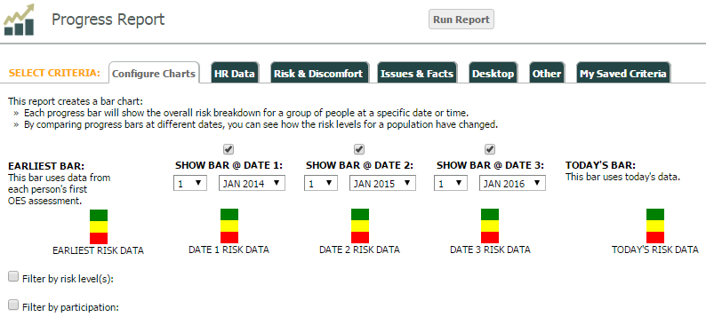
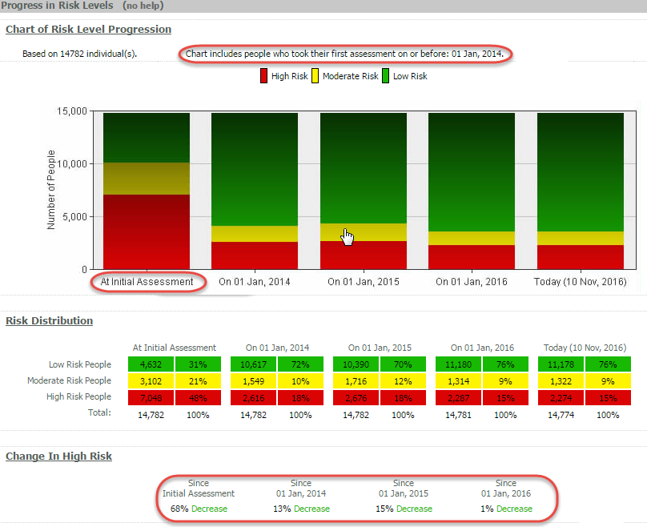
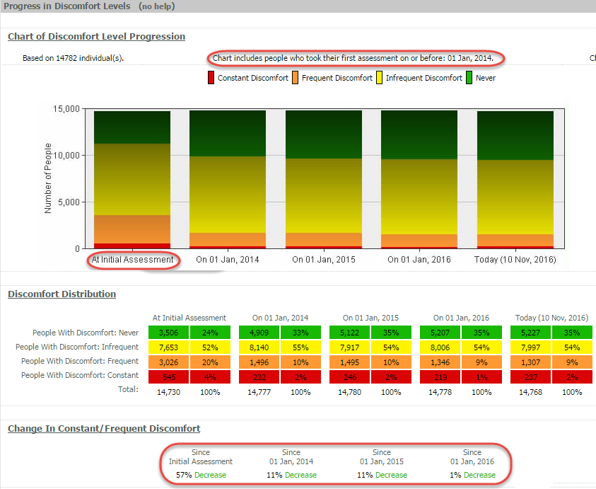
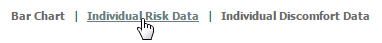
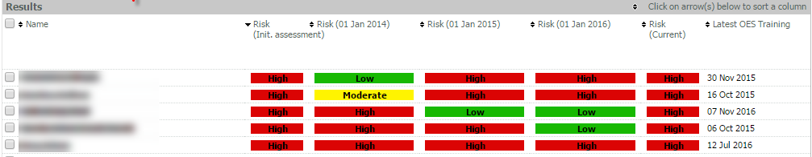
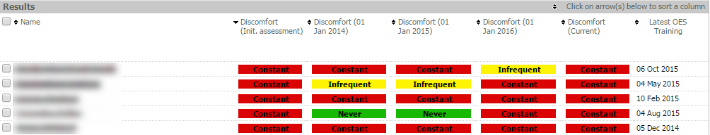

This example Progress Report shows risk and discomfort data for users at the time of initial assessment, at two additional selected dates, and today.
In the example below, each progress bar shows the overall risk breakdown for a group of people at a specific date. Only users who completed an initial OES assessment prior to January 1, 2014 (the first date chosen) will be included in the results.
Risk/discomfort data will be shown for users' initial assessment ("Earliest Bar"), January 1, 2014 ("Date 1"), January 1, 2015 ("Date 2"), and January 1, 2016 ("Date 3") as well as the current date ("Today's Bar").

The data shown in "At Initial Assessment" contains overall risk and discomfort information from the very first time a user completed the initial OES assessment. The data contained in "Today" contains overall risk and discomfort data on the date the report is run.
Risk Distribution and Change in High (Overall) Risk are also included.
Progress in (Overall) Risk Levels:
Chart includes people who took their first assessment on or before: 01 Jan, 2014

Progress in Discomfort Levels:

Click on "Individual Risk Data" or "Individual Discomfort Data" at the top of the report to view risk or discomfort information for individuals included in the report. You will be able to view an individual's Overall risk and discomfort levels at each of the specified dates.

Individual (Overall) Risk Data:

Overall risk levels are shown for the dates chosen in the selection criteria as well as "Initial Assessment" and "Current" risk levels. The date the user last completed the full OES online Assessment & Training is also shown.
Individual Discomfort Data:

Discomfort levels are shown for the dates chosen in the selection criteria as well as "Initial Assessment" and "Current" Overall risk levels. The date the user last completed the full OES online Assessment & Training is also shown.